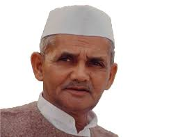
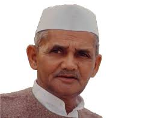

Lal Bahadur Shastri
 

Lal Bahadur Shastri ( born Lal Bahadur Srivastava; 2 October 1904 – 11 January 1966) was an Indian politician and statesman who was Prime Minister of India from 1964 to 1966. He previously served as Home Minister from 1961 to 1963.
Shastri was born to Sharad Prasad Srivastava and Ramdulari Devi in Mughalsarai on 2 October 1904. He studied in East Central Railway Inter college and Harish Chandra High School, which he left to join the non-cooperation movement. He worked for the betterment of the Harijans at Muzaffarpur and dropped his caste-derived surname of "Srivastava". Shastri's thoughts were influenced by reading about Swami Vivekananda, Mahatma Gandhi and Annie Besant. Deeply impressed and influenced by Gandhi, he joined the Indian Independence movement in the 1920s. He served as the president of Servants of the People Society (Lok Sevak Mandal), founded by Lala Lajpat Rai and held prominent positions in the Indian National Congress. Following independence in 1947, he joined the Indian government and became one of Prime Minister Nehru's key cabinet colleagues, first as Railways Minister (1951–56), and then in numerous other prominent positions, including the Home Minister.
As prime minister, Shastri promoted the White Revolution – a national campaign to increase the production and supply of milk – by supporting the Amul milk co-operative of Anand, Gujarat and creating the National Dairy Development Board. Underlining the need to boost India's food production, Shastri also promoted the Green Revolution in India in 1965. This led to an increase in food grain production, especially in the states of Punjab, Haryana and Uttar Pradesh. He led the country during the Second India–Pakistan War. His slogan "Jai Jawan, Jai Kisan" ("Hail to the soldier; Hail to the farmer") became very popular during the war. The war formally ended with the Tashkent Declaration on 10 January 1966; Shastri died the next day.